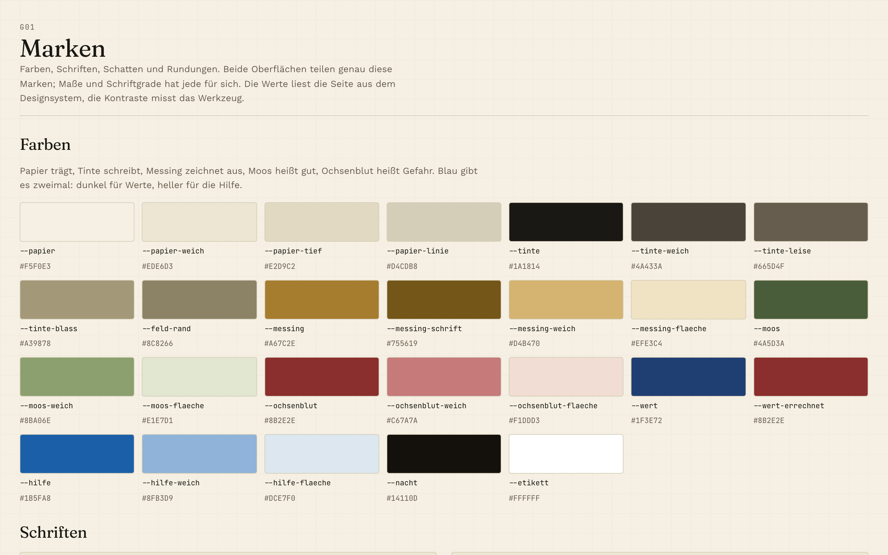
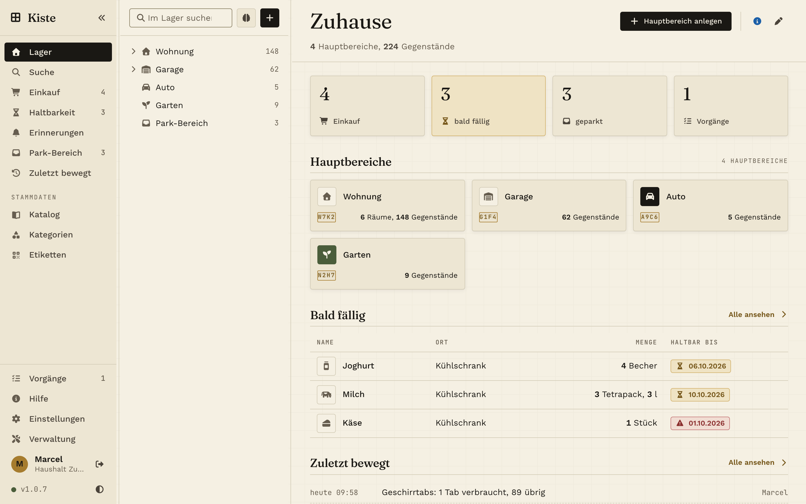
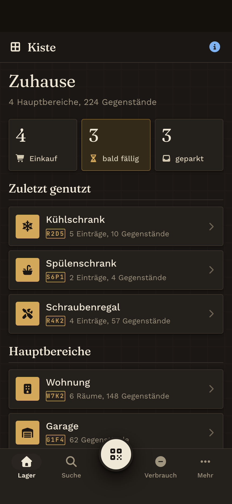
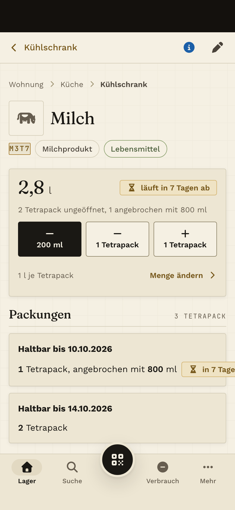

Designsystem
Papier trägt, Tinte schreibt, Messing zeichnet aus. Ein Designsystem in reinem CSS für eine Inventar-App mit zwei eigenständigen Oberflächen: eine fürs Handy, eine für den Rechner. Hell und dunkel, Kontraste gemessen, ohne Rahmenwerk und ohne Bauschritt.
Einstieg

MarkenFarben, Schriften, Schatten, Rundungen, gemessene Kontraste
ZeichenCode-Stempel, Erscheinungsbild, Mengentext, Score-Marken
Bausteine HandyHülle, Leiste, Blätter, Felder, Halten, Fortschritt
Bausteine RechnerDrei Spalten, Baum, Tabellen, Fenster, SchubladenGrundsätze
- Kaskadenschichten statt Kampf um Vorrang. Marken, Zeichen, Maße, Grund, Hülle, Bausteine, Ansichten: jede Schicht hat ihren Platz, kein einziges !important.
- Zwei Oberflächen, keine Umbruchpunkte. Handy und Rechner haben eigene Maße und Bausteine; geteilt werden nur Marken und Zeichen.
- Hell und dunkel aus denselben Marken. Jede Farbe ist eine Variable; das Thema wechselt eine Stelle.
- Kontraste gemessen, nicht geschätzt. Die Marken-Seite zeigt jede Paarung mit ihrem Wert.
- Für den Daumen gebaut. Berührflächen ab 44 Punkten, Feldschrift ab 16 Pixeln, sichere Bereiche, nichts rollt seitlich.
- Alles lokal. Schriften und Icons liegen bei; keine fremden Server, kein Nachladen.
Nutzen
Repo klonen, die Stile in dieser Reihenfolge einbinden und das Wurzelelement markieren. Die beiden Vorlagen für das Handy und für den Rechner zeigen den Kopf einer Seite vollständig.
Für den Rechner dieselben ersten drei Dateien, danach stil/rechner/30-masse.css bis 34-ansichten.css. Klassen beginnen mit z- (Zeichen, beide Oberflächen), h- (Handy) und r- (Rechner).
Kiste ist eine selbst gehostete Inventar-App für Haushalt und Familie. Dieses Repo ist die Ausgabe ihres Designsystems. Nicht-kommerzielle Nutzung, siehe Lizenz. Quelltext auf GitHub.